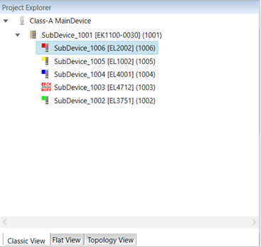
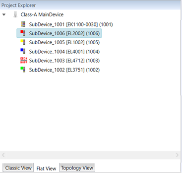
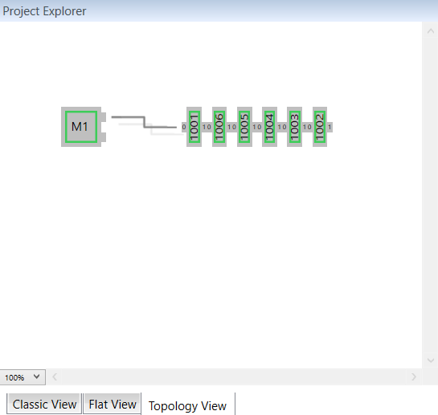

Here are the different topology visualization tabs available in the Project Explorer pad:
When using the Project Explorer pad, right click on a Sub-device to show the list of Sub-devices commands.

This is a two levels tree view:
First level; Contains coupler Sub-devices or MDP* Sub-devices.
Second level; Contains the connected Sub-devices and modules.
(*) MDP (Modular Device Profile): is a standardized way to represent in EtherCAT Configuration Tool complex or modular devices, e.g. I/O terminals, modular machines.

This view shows all Sub-devices in a flat list, as they are connected in the EtherCAT network.

This view shows a graphical tree of all Sub-devices, as they are connected in the EtherCAT network.
When you right click on a Sub-device, here are the commands available:
Append Sub-devices; Opens the Append EtherCAT SubDevice dialog box.
Remove Sub-devices; Deletes the selected Sub-device
Cut; Extended clipboard operations used to move existing Sub-device definitions.
Copy; Extended clipboard operations used to multiply existing Sub-device definitions.
Paste; Extended clipboard operations used to move or multiply existing Sub-device definitions.
Enable Sub-devices; Appends disabled Sub-devices to the process image at the previous position.
Disable Sub-devices; Removes the Sub-devices from process image and from the exported ENI file. It still keeps the Sub-device as disabled in the project.
Reload ESI data; Reloads ESI data which are stored in the project file from global ESI cache (after adding a Sub-device to the project the ESI data is stored in the project file).
Export SCI; Exports a SCI file.
Change Sub-device; Opens the Change SubDevice dialog box.